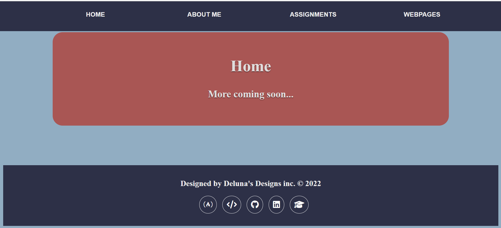

Peer Reviews
Jacob Harland

Jacob Harland Intoduction Page
- Beautifully designed. I like the side bar touch; it's differnt and it stands out from all lot of the other websites.
- Color schemes, fonts, spacing are consistent amongst webpages and sections within webapages.
- Contrast is perfect; light color on a dark backgroud is always the right touch.
- Validation works great with no errors, and you added the script to test the current page.
- The font is eye-catching and easy to read which is always a good trait in a website.
- The heading is really well done, with each field starting with a capital letter.
- Included a single h1 element for each page and all titles correspond the the right page.
Summary: Honestly one of the best websites i've seen in the class, i'd say its better than mine, great job!
Bryant De Luna-Peralta
Bryant's Homepage
- Color scheme in this website is outstanding; really making html color codes work for you huh.
- TI like the little images used to represent footer links. A little nice gesture that goes a long way.
- Realaly like how the assignments have their own page instead of being cluttered up in the header like mine.
- Contrast is great, pretty fonts and a nice favorite quote
- Validation works great with no errors, and you added the script to test the current page.
- Included h1 that is the same for every page, and added h2 elements with the name of the page
- The consistency is a joy to behold
Summary: Very beautiful website from the color, to the fonts, to the structure of the pages. *chef's kiss*